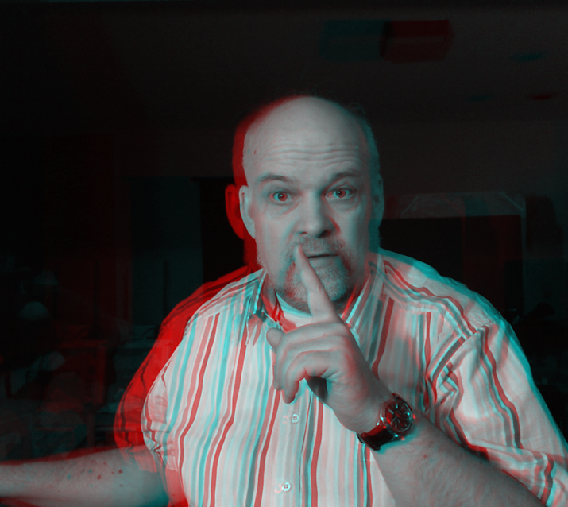

AnaglyphsAnaglyphs are images or movies that use filters, to separate the two encoded images encoded to create a 3D effect. The tools here require red / cyan glasses found e.g. here. Enjoy and feel free to contact me with comments or questions. Tools and codeAnaglyph Drawing Pad - Draw in 3D Anaglyph Camera - 3D Pictures from two cameras Fourier Camera - Explore Fourier Transforms (c) Thomas Proffen, 2017.
|